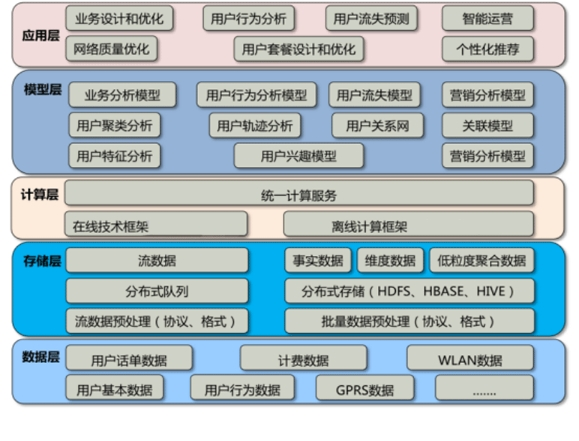

方案概述
SOLUTION OVERVIEW
中国的互联网发展虽然起步比国际互联网发展晚，但是进入新世纪以来，同样快速发展。据 CNNIC 公布的最新互联网发展调查报告显示，截至到 2006 年 12 月，中国互联网网民数达到 1.37 亿，同 1997 年 10 月第一次调查的 62 万网民人数相比，网民人数已是当初的221 倍。宽带上网人数达到 9070 万，位居全球第二位，手机上网网民数 1700 万。中国网站数为 843000 个，全国网页数为 44.7 亿个。这些数字都是非常惊人的。
近年来互联网发生了巨大的变化，移动互联网、社交网络、电子商务大大扩展了互联网的疆界和应用领域。互联网行业在大数据技术浪潮中的异军突起，也将为整个信息技术产业带来新的机遇。一方面，大数据会催生对 IT 产品与解决方案更多的需求，将涵盖从硬件、软件到信息服务等多个层面；另一方面，越来越多的互联网公司正在通过云交付的模式，将自身对于大数据集的存储、计算与分析能力开放给第三方，使得数据即服务（Data as a Service）成为影响产业格局的新一代业务模式。
互联网行业大数据“ 4V+1S” 特性：数据规模大、数据价值稀疏珍贵、 数据的多样性、数据的实时性和数据的社会性成就了移动互联网大数据的超凡影响力。
方案架构
SOLUTION ARCHITECTURE
互联网行业大数据总体系统框架分为五层, 分别是数据层，存储层，计算层，模型层, 应用层。模型层是整个大数据的核心部分，为上层应用提供数据支撑。

术浪潮中的异军突起，也将为整个信息技术产业带来新的机遇。一方面，大数据会催生对 IT 产品与解决方案更多针对互联网行业大数据分析的特点, 引入大数据平台架构,实现对海量用户点击数据、用户行为数据、用户反馈数据、用户上网数据等等的存储和管理，保证互联网海量状态数据的实时性和高效运营。
方案优势
SOLUTION ADVANTAGE
3xData互联网大数据解决方案在数据分析、数据管理、数据处理、数据可视化等重要技术上具有优势：
1. 数据分析技术：包括数据挖掘、机器学习等人工智能技术，主要应用在医疗分析和研究分析两大方面，如病理分析，病毒分析，人体健康度分析，个性化差异分析等。 为实现可信赖的医疗、 个体化的医疗、转化医学研究、病人参与的医疗，彩讯医疗大数据解决方案内置自主开发的函数模型库，除包含常用的统计分析算法外，还内置了多种常用数据挖掘算法及分析模型。插件式的函数模型库，可动态增加新算法模型。同时，还提供行业分析模型及类似 BI 的分析和展示工具。
2.数据管理技术：包括关系型和非关系型数据管理技术、数据融合和集成技术、数据抽取技术、数据清洗和过滤技术。医疗数据本身非常的分散，准确性、及时性均有所欠缺，也对大数据管理技术提出了更高的要求。彩讯医疗大数据解决方案内置 ETL 服务子系统与 ETL 配置工具，支持从文件，DB、数据流中导入数据。 灵活的进行行数据转换配置和任务配置。
3.数据处理技术：包括分布式计算技术、内存计算技术、流处理技术。 现行医疗行业医学信息不对称，个体化差异大，医疗疾病种类繁多，复合疾病常见、关系复杂，这要求通过新型数据处理技术来更有效的利用软硬件资源，在降低 IT 投入、维护成本和物理能耗的同时，为医疗大数据的发展提供更为稳定、强大的数据处理能力。 3xData医疗大数据解决方案包含Hadoop分布式计算框架、Spark内存计算框架和Streaming流计算框架，同时集成了 hive、 hbase 等成熟组件。
4.数据展现技术：包括可视化技术、历史流展示技术、空间信息流展示技术等。主要应用于患者分类查询展现，复合疾病分析展现，基因组学数据展现等方面。医疗数据种类繁杂，统计指标复杂，要求实时性比较高，因此需要大力发展数据展现技术，提高医疗数据的直观性和可视性，从而提升医疗质量降低医疗成本。3xData医疗大数据解决方案自助分析工具包含报表工具和分析工具。自定义报表工具，实现了基于 XML 的定义文件来可编程性地生成报表的能力。 围绕着报表引擎，开发用户图形界面，用户可以使用向导，无需编程，通过工具配置一步接一步完成创建一个报表。 数据展示格式灵活，能更大程度上满足用户的数据需求。多维分析工具，提供丰富的图形化展现界面和接口。用 java 语言开发支持 MDX（多维表达式）的查询语言 、分析型 XML 和 olap4j 的接口技术规范。实现了从 SQL 和其它数据源读取数据，在内存缓冲区中生成集合数据。
方案价值
SOLUTION ARCHITECTURE
3xData互联网大数据解决方案自助分析工具包含报表工具和分析工具。自定义报表工具，实现了基于 XML 的定义文件来可编程性得生成报表的能力。 围绕着报表引擎，开发用户图形界面，用户可以使用向导，无需编程，通过工具配置一步接一步完成创建一个报表。 数据展示格式灵活，能更大程度上满足用户的数据需求。多维分析工具，提供丰富的图形化展现界面和接口。用 java 语言开发支持 MDX（多维表达式）的查询语言 、分析型 XML 和 olap4j 的接口技术规范。实现了从 SQL 和其它数据源读取数据，在内存缓冲区中生成集合数据。
互联网行业当前主要是面临对数据实时分析要求较高，海量数据处理效率低、缺少分析方法、分析软件能力差等问题。 3xData互联网行业解决方案通过优化当前业界先进的大数据处理技术和模式，构建与互联网业务松耦的中间性的大数据统计、分析和挖掘平台。利用大数据平台，通过资源的线性扩展，可以实现单条信息秒级的在线处理性能、 TB 级数据离线分布式处理、 PB 级数据的存储。